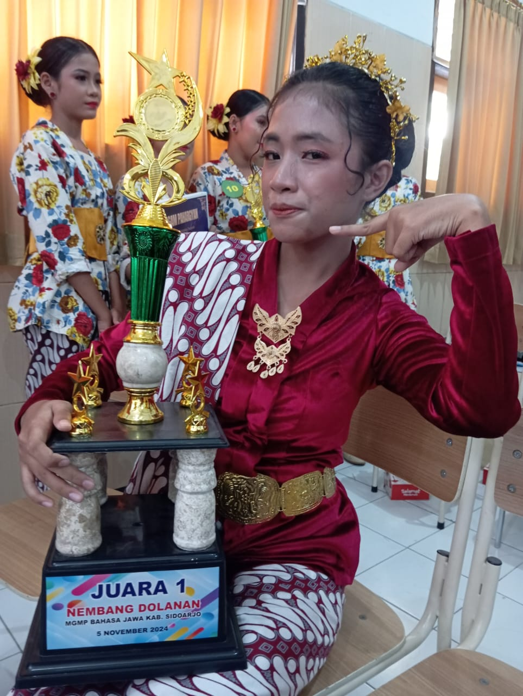
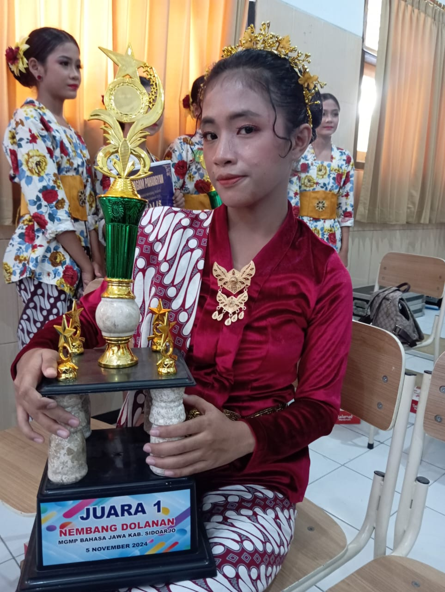
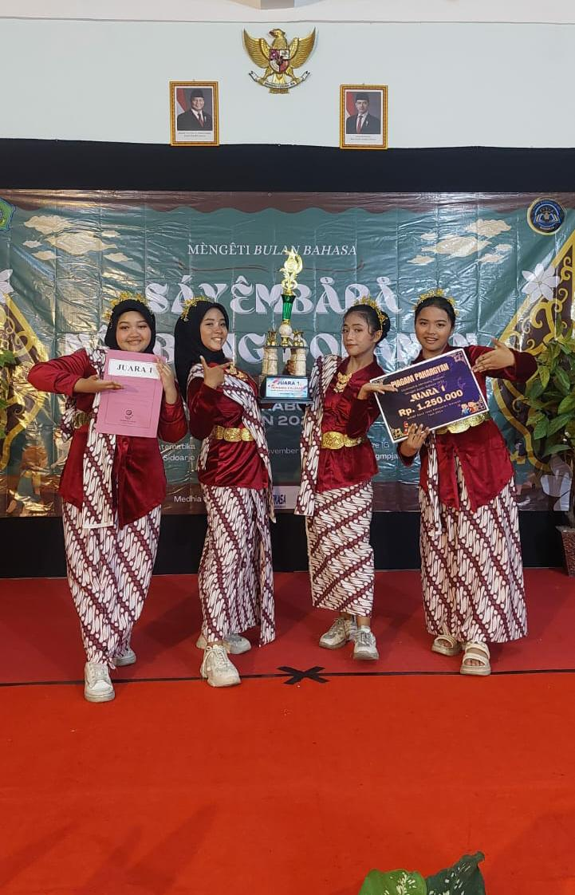
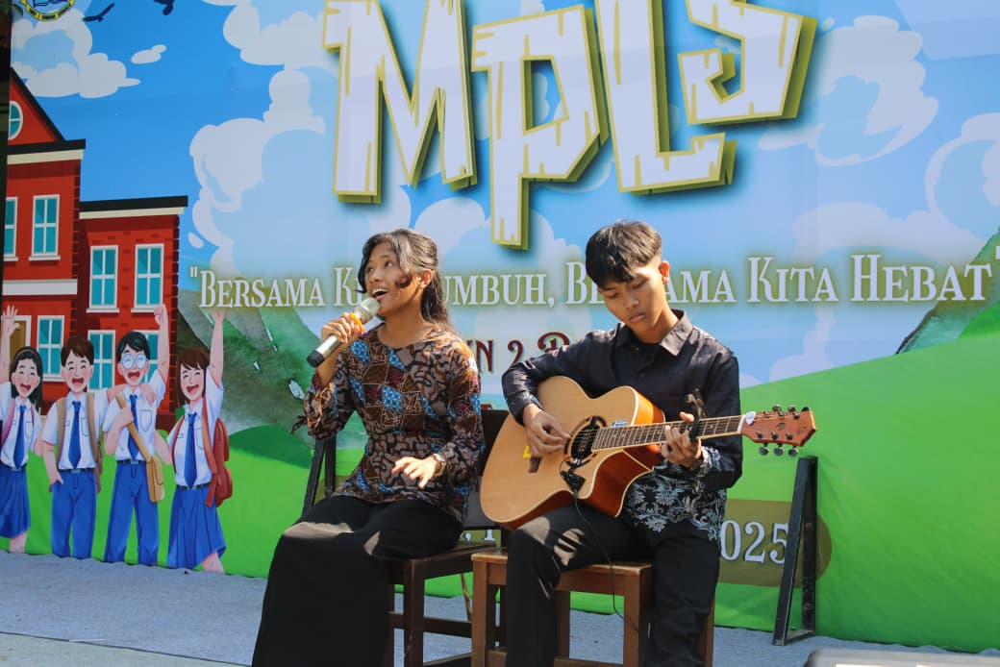
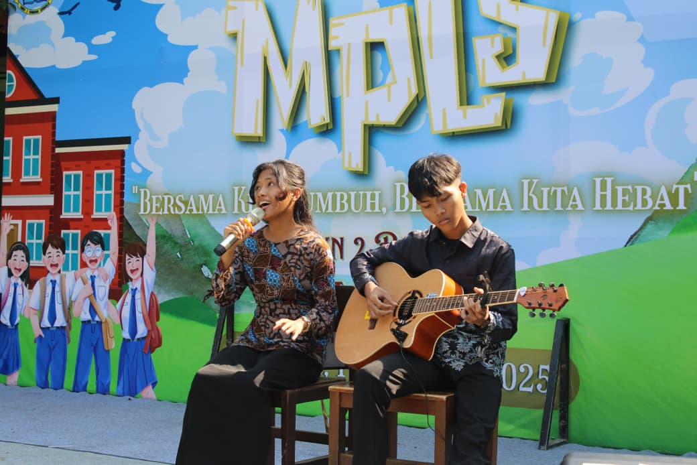
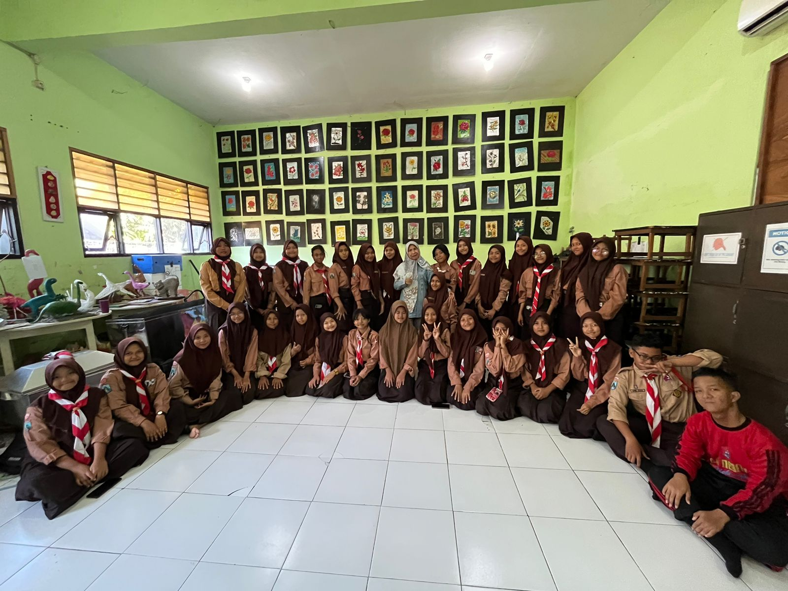
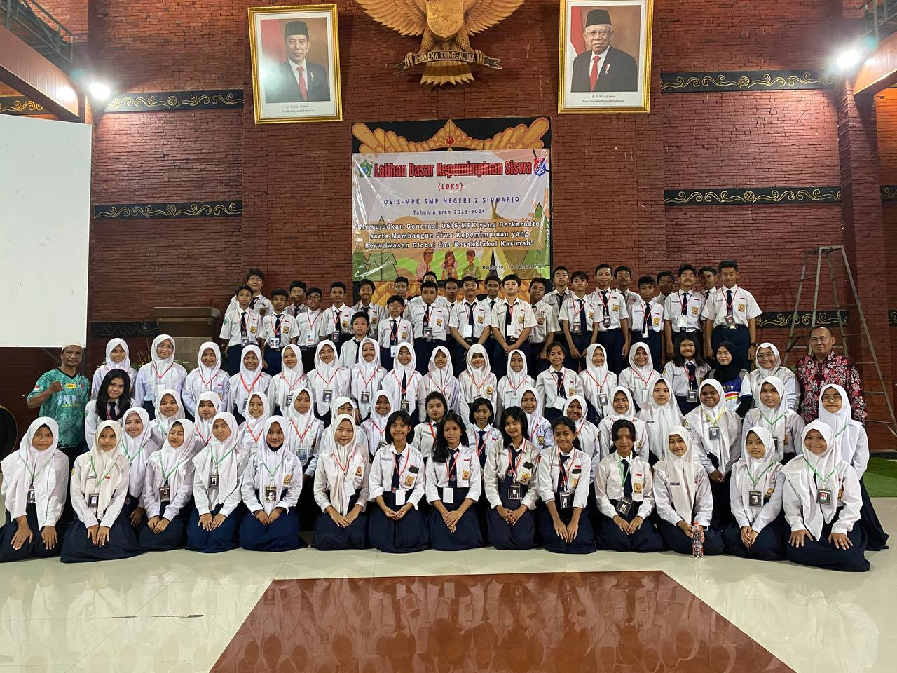
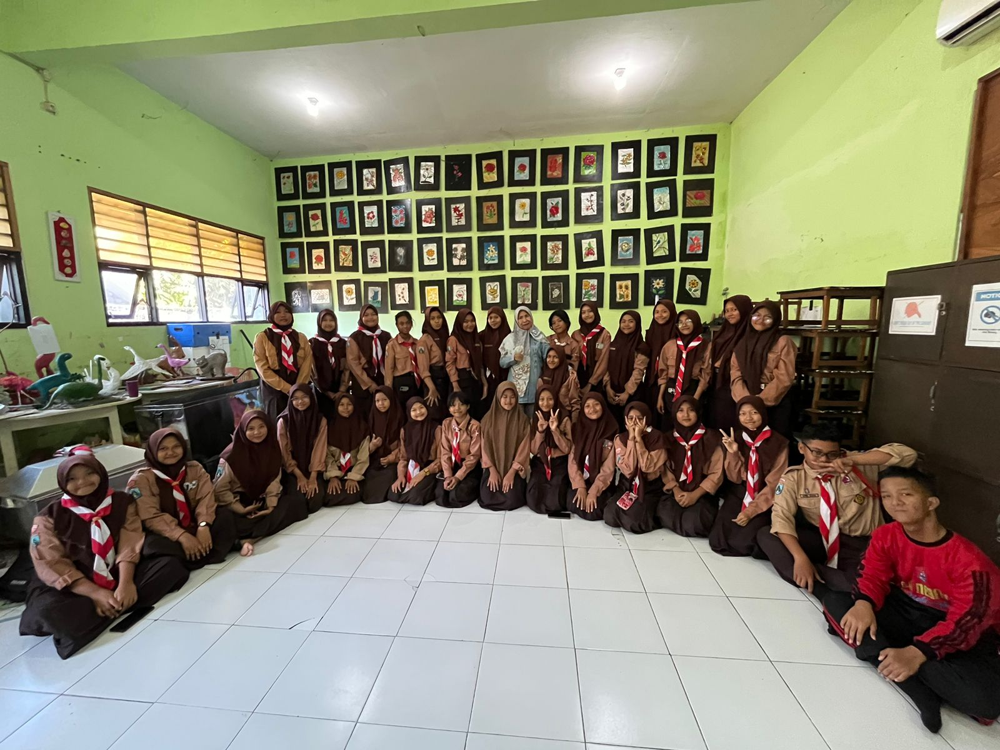
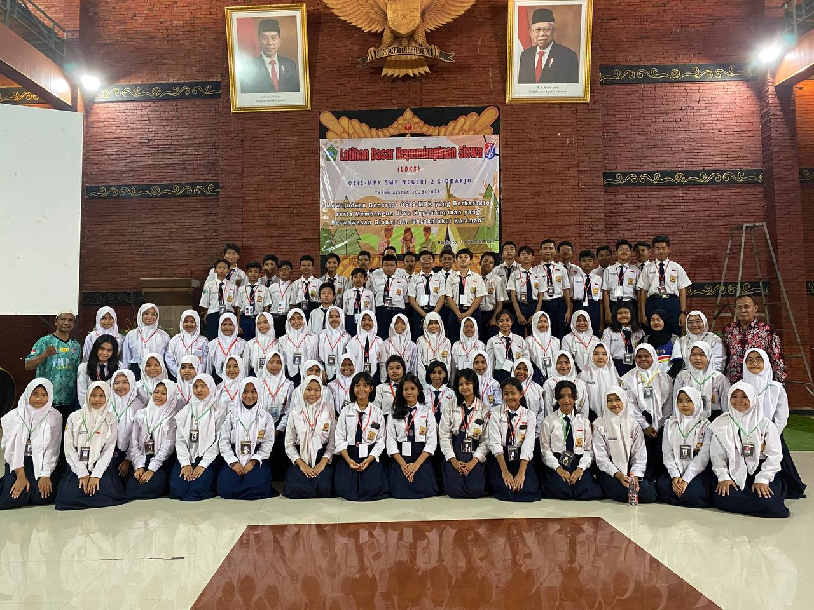

Tentang Saya
- Nama saya Yemima Oktavia Satoko biasa di panggil Yemima.
- Saya berumur 15 Tahun.
- Saat ini saya bersekolah di SMK Negeri 2 Buduran Sidoarjo di jurusan RPL.
- Saya bertempat tinggal di Perumahan AURI, jalan capung no. 120, RT.003/RW.001, Kwadengan Barat, Kelurahan Lemahputro, kec. Sidoarjo, kab. Sidoarjo, Provinsi Jawa Timur, Indonesia.
Riwayat Sekolah
Tempat saya melanjutkan ilmu dari Tk - SMK:
- Saat saya SMK saya bersekolah di SMK Negeri 2 Buduran Sidoarj.
- Saat saya SMP saya bersekolah di SMP Negeri 2 Sidoarjo.
- Saat saya SD saya bersekolah di SDS Pasar Ikan.
- Saat saya Tk saya bersekolah di TK Smart School.
Saya pernah mengikuti kejuaraan yaitu:
- Saya pernah mengikuti kejuaraan menyanyi tembang dolanan juara 1 tingkat kabupaten Sidoarjo.
- Saya pernah mengikuti kejuaraan akustik band juara 2 tingkat kabupaten Sidoarjo.
- Saya pernah mengikuti kejuaraan menyanyi lagu daerah juara 2 antar kelas.   
Saya pernah menjadi pengisi acara:
- Saya menjadi pengisi event pameran kesenian menyanyi solo di sekolah.
- Saya menjadi pengisi event ulang tahun sekolah sebagai penyanyi solo.
- Saya menjadi pengisi acara tetap bersama extra paduan suara di polsekta Sidoarjo dari kelas 1 smp - 3 smp untuk acara 17 agustus.
- Saya menjadi pengisi acara saat mengikuti extra paduan suara di trawas untuk acara UKS sekabupaten Sidoarjo.
- Saya menjadi pengisi acara saat mengikuti estra paduan suara di Alun-alun Sidoarjo untuk acara ulang tahun Sidoarjo ke-166.
- Saya mengisi acara 17 agustus di perumahan saya menjadi penyanyi solo.
- Saya mengisi acara mpls sebagai penyanyi solo.
 

Saya memiliki pengalam berorganisasi:
- Saya mengikuti organisasi band dan menjadi pengurus inti yaitu ketua dalam organisa tersebut.
- Saya mengikuti organisasi paduan suara dan menjadi pengurus inti yang bertugas untuk kordinasi tim agar tetap akur.
- Saya mengikuti organisasi Majelis Perwakilan kelas menjadi pengurus inti untuk mengkordinasi rapat gabungan antara OSIS dan MPK.
  
 